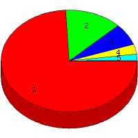

Week of 5/23/2010 to 5/29/2010: Top
5 of
5 File Types (Extensions)
Sorted by Access Count
Individual file types as determined by file extensions. All URLs that
do not contain an extension are counted as directories.

| Rank |
Type |
Accesses |
% |
Bytes |
% |
| 1 |
html
|
248 |
74.25 |
5,006,848 |
68.76 |
| 2 |
Directory (folder)
|
46 |
13.77 |
238,224 |
3.27 |
| 3 |
htm
|
23 |
6.89 |
213,019 |
2.93 |
| 4 |
ico
|
10 |
2.99 |
14,060 |
0.19 |
| 5 |
pdf
|
7 |
2.10 |
1,809,427 |
24.85 |